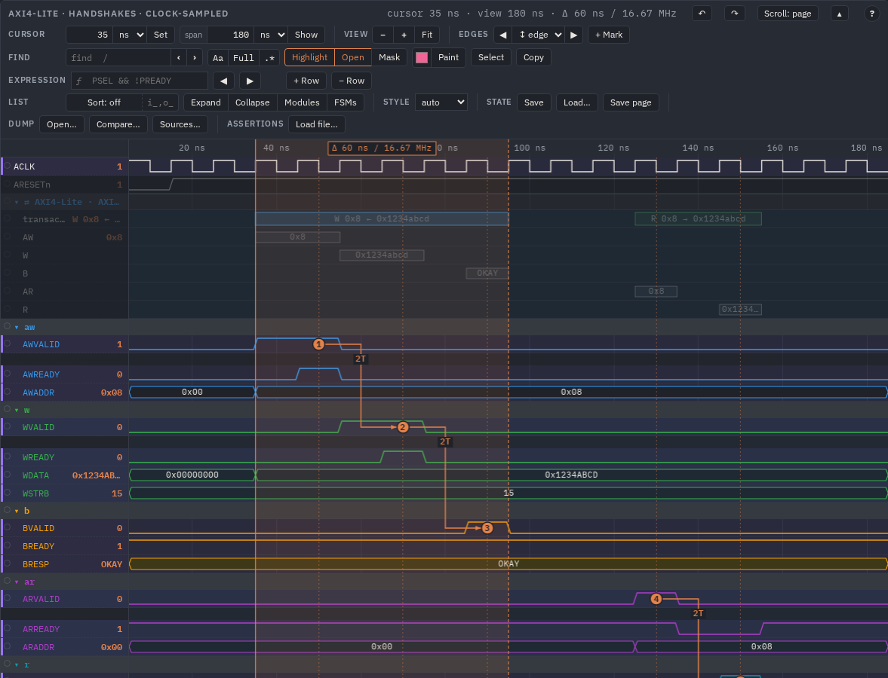
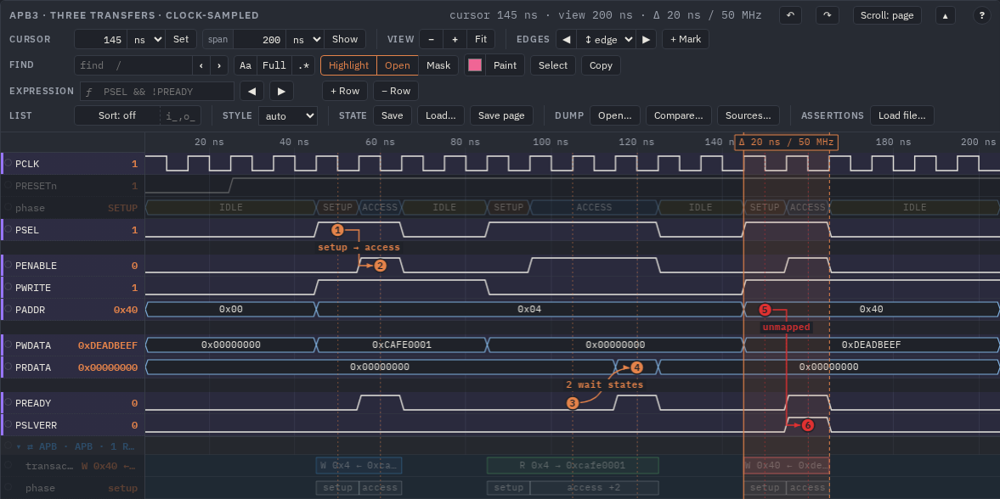

Bus transactions
A bus is read as transfers, not as forty wiggling signals: write 0x40 ← 0xCAFE, 3 cycles. The viewer finds the bus ports of every module by the names of their signals — AXI4, AXI4-Lite, AXI3, AXI4-Stream, APB, AHB, Avalon-MM, Avalon-ST, Wishbone, OBI — takes them apart at the clock edges and draws each port as a group of transfers and channel beats, where a stall is plain to see. Nothing to configure for the usual names; a setting for your own.
What it looks like
Each port found is a group ⇄ name · protocol · counts (⇄ APB · APB · 1 R · 2 W · 1 err) under its module.
It starts folded: its transfers sit on the header row itself, one box each, so a folded port costs one row and
still shows when something happens on the bus.

⇄ … AXI4-Lite, the write
W 0x8 ← 0x1234abcd (blue) and the read R 0x8 → 0x1234abcd (green), each from its first cycle to its
response.Open it (a click on its name, or Expand) and it has:
- transactions: the transfers again, stacked in up to three lanes where they overlap, with their labels;
- one row per channel — AW, W, B, AR, R for AXI; address / data for AHB; … — where every beat is a box from the cycle its valid came to the edge of its handshake. A beat that waits for ready is a long box: the stall is its length.

| Colour | Means |
|---|---|
| blue | a write (and an AXI4-Stream or Avalon-ST packet) |
| green | a read |
| red | an error: SLVERR / DECERR, PSLVERR, AHB ERROR, a Wishbone err or rty, an OBI err |
| dashed outline | not ended: no response by the end of the dump |
| grey | a channel beat |
The colours are the CSS custom properties --bus-write, --bus-read, --bus-error,
--bus-channel, one set per theme. The value column shows the transfer — or the beat — at the
cursor.
Going through the transfers
Hover a transfer for its fields, its cycles and its times
(write 0x8: 0x1234abcd → OKAY · 6 cycles, 35 ns → 95 ns; a beat: its channel, its label and its two times).
Click it to select it:
- the cursor goes to its start (the view moves when it is out of sight);
- its range from start to end is measured: shaded, its Δ on the axis;
- the port's signals and its clock are highlighted, everything else dimmed;
- the title line says what it was:
AXI4-Lite: W 0x8 ← 0x1234abcd · 6 cycles, with· errorfor a failed one.

W 0x8 ← 0x1234abcd · 6 cycles.]t / [t on the waves select the next / previous transfer of any port from the cursor, round the ends, and scroll its row into view. Esc clears the selection with the rest. A saved viewer state (Save) keeps the selected transfer.

APB: W 0x40 ← 0xdeadbeef · 2 cycles · error; the port's
phase row shows setup and access of each transfer (access +2: two wait states).How a port is found
For every scope of the dump (every module instance), the viewer looks at its signals' names, lower-cased:
- A prefix. The signals of one port share a prefix that ends with
_, or have none:s_axi_awvalid,m_axis_tdata,wb_cyc_o, or plainPSEL. Two ports in one module (s_axi_,m_axi_) are two groups. - A direction suffix
_i,_o,_in,_outis ignored (awvalid_iisawvalid). - The signals that make the protocol. One of the sets in the table below must be there whole; the rest of the roles are taken when they exist.
- The clock: the prefix with the protocol's clock name (
s_axi_aclk), else that name in the module, else in the modules above, else a 1-bit*clkof the module. No clock, no port.
Values are sampled just before each rising edge of that clock — what a flop samples, as the assertions and the sva CLI
do. A port seen again at another level of the hierarchy (the same nets) is drawn once.
| Protocol | Found by | Clock names | Transfers | Channel rows |
|---|---|---|---|---|
| AXI4, AXI4-Lite, AXI3 | awvalid awready bvalid or arvalid arready rvalid |
aclk, clk |
a write = AW + its W burst (to wlast, or awlen + 1 beats) + the B with its ID; a read = AR + its R beats to
rlast, matched by ID so out-of-order reads come apart; SLVERR / DECERR red. No awlen / arlen:
AXI4-Lite; a wid: AXI3 | AW W B AR R |
| AXI4-Stream | tvalid tdata or tvalid tlast | aclk, clk |
packets to tlast (4 beats 0x11; no tlast: every beat a packet) | beats |
| APB | psel penable | pclk, clk |
setup, wait states, access; PSLVERR red | phase (setup, access +N) |
| AHB, AHB-Lite | htrans haddr | hclk, clk |
pipelined address and data phases, NONSEQ + SEQ bursts (×4), hready waits, ERROR red |
address, data |
| Avalon-MM | address waitrequest or address readdatavalid | clk |
read / write held by waitrequest; pipelined reads answered by readdatavalid, burstcount
beats | command, response |
| Avalon-ST | valid data startofpacket endofpacket | clk |
packets from startofpacket to endofpacket | beats |
| Wishbone | cyc stb ack | clk, clk_i |
classic: the strobe to ack / err / rty; pipelined (a stall): requests and their
acks in order; err and rty red | request, ack |
| OBI | req gnt rvalid | clk |
req / gnt, the responses by rvalid in order; err red |
request, response |
The labels read the same in every protocol: W 0x40 ← 0xCAFE a write of that data to that address, R 0x8 → 0x12
a read and its data, ×4 a burst of four beats.
Ports with other names
When your signals are not named after the protocol, list the port in the buses setting (in the config's
"config", a view's "config", or wavelens.config.js):
"config": {
"buses": [
{ "protocol": "axis", "scope": "tb.dut", "name": "pixels",
"map": { "tvalid": "pix_valid", "tready": "pix_ready", "tdata": "pix_data", "tlast": "pix_eol" } },
{ "protocol": "apb", "scope": "tb.dut.u_cfg", "prefix": "cfg_", "clock": "pclk_cfg" }
]
}| Key | Meaning |
|---|---|
protocol | axi axis apb ahb avmm avst wb obi |
scope | the instance whose signals they are (the dump's path, e.g. tb.dut) |
prefix | the common prefix of standard role names (cfg_ + psel …) |
map | instead of a prefix: role → the signal's name in the scope ("tlast": "pix_eol") |
clock | the clock's name in the scope or its full path (default: found as above) |
name | the group's name (default: the module and the prefix) |
A listed port must still have one of the protocol's sets of signals (the "Found by" column). The listed ports come first, so their names
win over the ones found. "busDetect": false turns the search by names off and keeps only the listed ports — useful when a
name collides with a protocol's (a valid / data pair that is no bus).
A port is looked for among the signals of one scope of the dump, whatever groups a view puts them in: the
AXI-Lite example draws its channels in groups aw, w, b, ar, r and still
has one port. In hand-written WaveJSON, signals without a path belong to the whole diagram, one scope.
In the static SVG
A static figure ("render": "svg", see WaveDrom) draws each port as its group with the
transactions row (no channel rows) and adds a legend line ⇄ name (protocol): counts under the figure. The APB example's
static view of the write:

⇄ APB · APB · 1 W with the transfer W 0x4 ← 0xca…; the legend
under the figure repeats it.